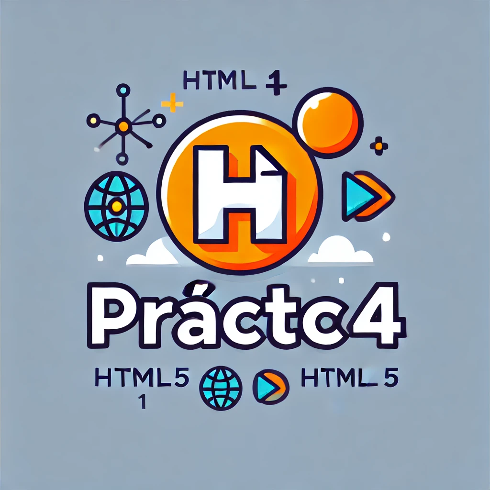

Para el desarrollo de esta práctica, he decidido no utilizar ningún framework. La razón es que quiero practicar el uso de etiquetas y estilos CSS desde cero.
Las siguientes cinco entradas corresponden al blog, donde he añadido un encabezado, un pie de página y un menú de navegación que permite acceder directamente a los artículos.
Al final de cada entrada, he incluido un enlace que permite regresar al inicio del blog de forma rápida.
He comentado el código HTML y CSS en la mayor medida posible para facilitar su comprensión.

Entrada 2: Explorando el mundo de los Tags o Etiquetas HTML
La siguiente lista contiene etiquetas HTML. Algunas de ellas son tradicionales ( o más antiguas)
otras son etiquetas semánticas introducidas en HTML5, quería hacer incapié en la gran evolución en HTML 5
<html>: Define el documento como HTML.
<head>: Contiene metadatos y enlaces a recursos, como CSS y scripts.
<title>: Establece el título de la página en el navegador.
<body>: Contiene el contenido visible de la página.
<h1> a <h6>: Definen encabezados, siendo <h1> el más importante y <h6> el menos.
<p>: Representa un párrafo de texto.
<a>: Define un enlace o hipervínculo.
<img>: Inserta una imagen en el documento.
<ul>: Define una lista no ordenada.
<ol>: Define una lista ordenada.
<li>: Representa un elemento de lista dentro de <ul> o <ol>.
<table>, <tr>, <td>: Definen una tabla, filas y celdas, respectivamente.
<form>: Crea un formulario para la entrada de datos.
<input>: Campo de entrada de datos en formularios, con varios tipos (texto, email, etc.).
<div>: Define una sección o división en la página para organizar el contenido.
<span>: Contenedor en línea para aplicar estilos específicos a partes de texto.
<header>, <nav>, <footer>: Elementos estructurales en HTML5 para semántica.
<section>: Agrupa contenido relacionado en una página.
<article>: Representa contenido autónomo dentro de una página.
<aside>: Define contenido secundario o complementario.
<footer>: Define el pie de página, generalmente con información adicional o enlaces.
Entrada 3: El presente HTML5 y las etiquetas Semánticas
HTML5 es la última versión de HTML
el cual establece una serie de nuevos elementos y atributos que reflejan
el uso típico de los sitios web modernos.
Ejemplo de la etiqueta <Video> y <Audio>
Este es un ejemplo de la etiqueta video en HTML5 mostrando controles de reproducción dentro de un elemento de una tabla.
Este es un ejemplo de la etiqueta audio en HTML5 mostrando controles de reproducción dentro de un elemento de una tabla.
Entrada 4: Ejemplo calendario CSS
En este ejemplo se hace uso de una hoja de estilo específica
para el calendario, "estilos_calendario.css" para ordenar los elementos hacemos uso de Flexbox
que por ejemplo con la propiedad 1 ,es decir :1 ,nos permite expandir los distintos elementos
con un espacio uniforme para cada día de la semana.
Calendario Mensual
Dom
Lun
Mar
Mié
Jue
Vie
Sáb
1
2
3
4
5
6
7
8
9
10
11
12
13
14
15
16
17
18
19
20
21
22
23
24
25
26
27
28
29
30
31
Entrada 5: Imagenes HTML5 y W3C
En este caso no utilizamos la etiqueta <table>, sino CSS con
la etiqueta <div> y la clase imagenes-horizontales , las imágenes
son obtenidas remotamente a través del protocolo https de otras fuentes con la etiqueta <img>